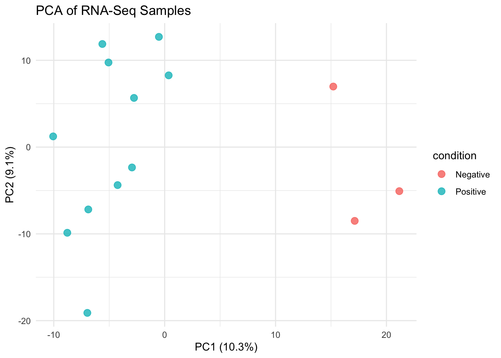

Q&A 7 How do you summarize expression changes with an MA plot?
7.1 Explanation
An MA plot (short for Minus vs. Average plot) displays the relationship between:
- M (log ratio) = log2 fold change (Y-axis), showing the difference in expression between conditions
- A (mean average) = average expression across all samples (X-axis), typically on a log scale
This visualization helps identify:
- ✳️ Genes with large fold changes
- ⚠️ Low-abundance genes with unstable variance
- üîç Systematic biases or asymmetries in the DE results
It’s especially useful after running DESeq2, as the result object already contains both baseMean (A) and log2FoldChange (M).
7.2 Python Code
ℹ️ Make sure
data/deseq2_results.csvis available, saved from the R step.
import pandas as pd
import numpy as np
import seaborn as sns
import matplotlib.pyplot as plt
# üîπ Load DE results
res_df = pd.read_csv("data/deseq2_results.csv")
# üß™ Add significance flag
res_df["significant"] = (res_df["padj"] < 0.05) & (abs(res_df["log2FoldChange"]) > 1)
# üìä MA plot
plt.figure(figsize=(8, 6))
sns.scatterplot(data=res_df,
x=np.log10(res_df["baseMean"] + 1),
y=res_df["log2FoldChange"],
hue="significant",
palette={True: "red", False: "gray"},
alpha=0.6)
plt.axhline(0, linestyle="--", color="black")
plt.title("MA Plot of Differential Expression")
plt.xlabel("Log10 Mean Expression (baseMean)")
plt.ylabel("Log2 Fold Change")
plt.legend(title="Significant")
plt.tight_layout()
plt.show()
7.3 R Code
library(tidyverse)
# üîπ Load saved DESeq2 results
res_df <- read_csv("data/deseq2_results.csv") %>%
drop_na(baseMean, log2FoldChange, padj) %>%
mutate(
significant = padj < 0.05 & abs(log2FoldChange) > 1,
log_baseMean = log10(baseMean + 1) # Avoid log10(0)
)
# üìâ MA Plot
ggplot(res_df, aes(x = log_baseMean, y = log2FoldChange, color = significant)) +
geom_point(alpha = 0.6, size = 2) +
scale_color_manual(values = c("FALSE" = "gray", "TRUE" = "blue")) +
geom_hline(yintercept = c(-1, 1), linetype = "dashed") +
labs(
title = "MA Plot of Differential Expression",
x = "Log10 Mean Expression (baseMean)",
y = "Log2 Fold Change"
) +
theme_minimal()
✅ Takeaway: MA plots reveal expression trends across the full dynamic range of genes. Use them to verify if your DE analysis is symmetric and highlight low-abundance noise.